Puente Alto · Av. Gabriela 1863
Dos en la misma casa, sin pelearse.
Clínica Veterinaria Vasca: más de 20 años y 286 reseñas en Puente Alto.
- +20años de experiencia, según su web
- 286reseñas en Google
- 7días a la semana abierta
- 1enlace en su ficha, y lleva a un casino
Dos en la misma casa
Cómo presentar al nuevo con el que ya está
- PASO 1
Espacios separados
Los primeros días, cada uno en su pieza.
- PASO 2
Olores antes que encuentros
Una manta de uno en la cama del otro.
- PASO 3
Encuentros cortos
Siempre con una salida para los dos.
- PASO 4
La comida aparte
Platos lejos, al menos al principio.
Cuándo pedir ayuda a la clínica
Si uno deja de comer, se esconde por días o hay peleas con heridas.
Cada casa es distinta: la consulta lo define.
El segundo no llega a quitarle el lugar al primero.
Según su web de 2024
Lo que se atiende
-
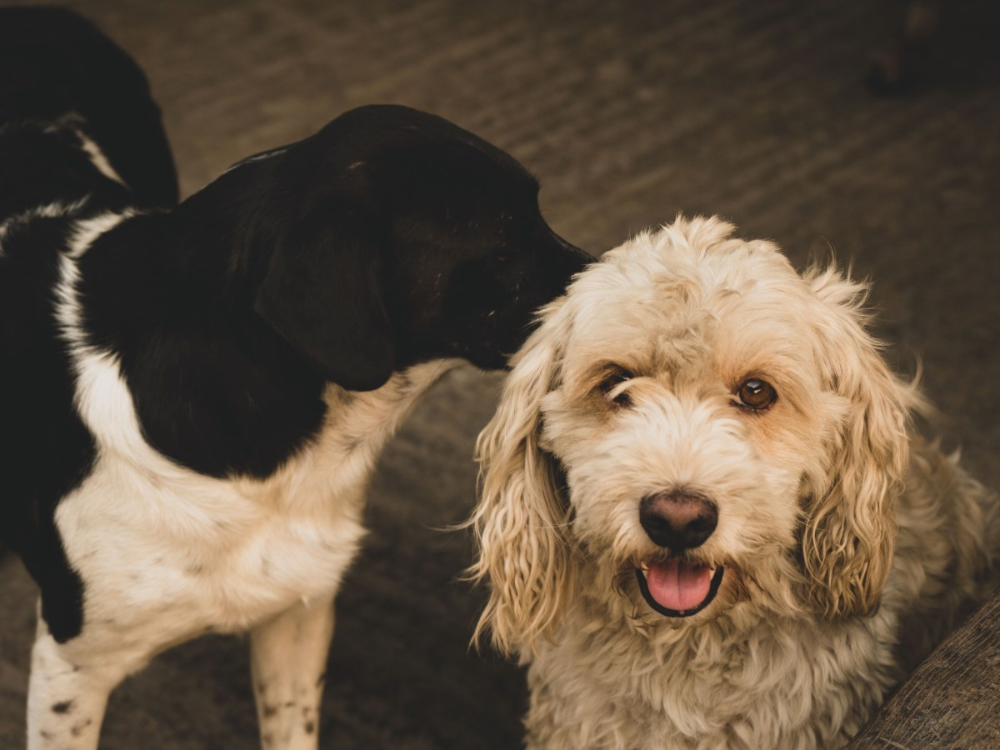
Imagen
Radiografía digital
Y ecografías.
-
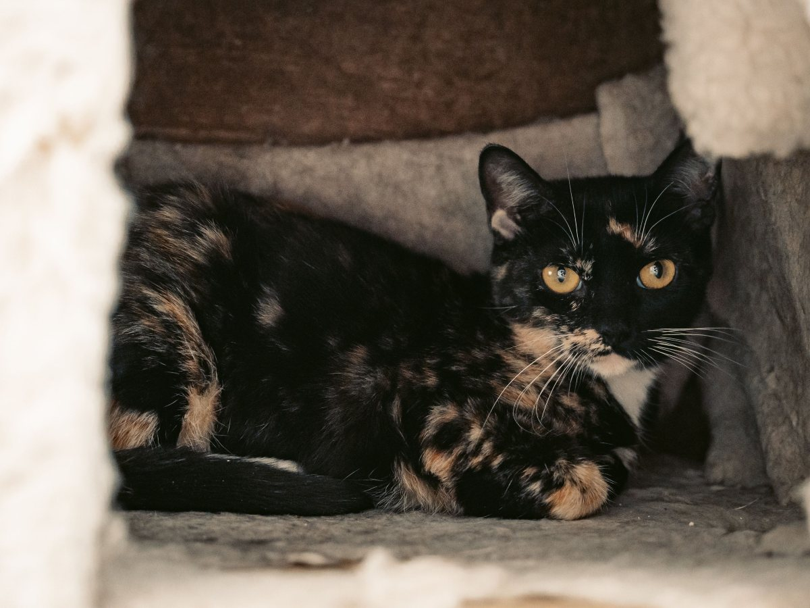
Pabellón
Cirugías
Con anestesia con gases.
-
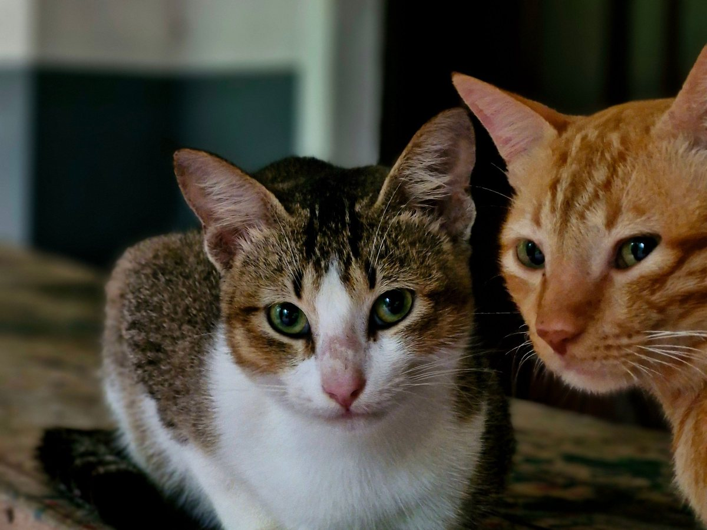
Además
Animales exóticos
Tratamientos veterinarios.
-
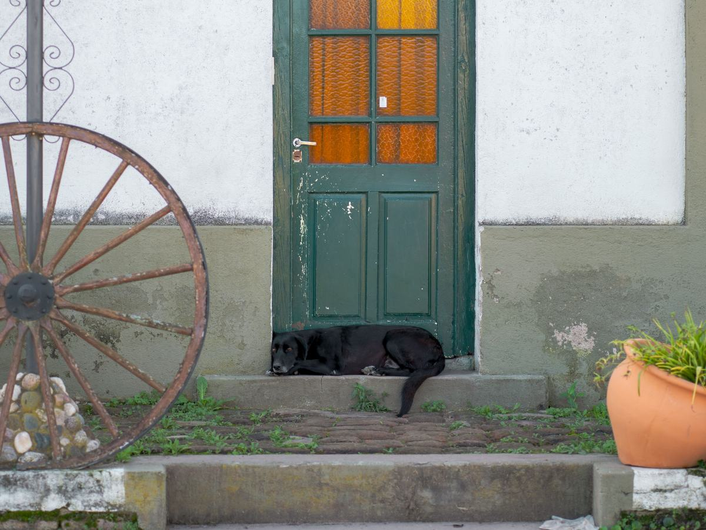
Fuera de la clínica
Visitas a domicilio
Se coordinan por teléfono.
-
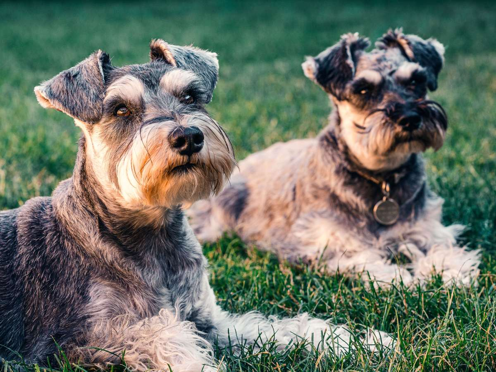
Peluquería
Baño y corte
También corte de uñas.
-
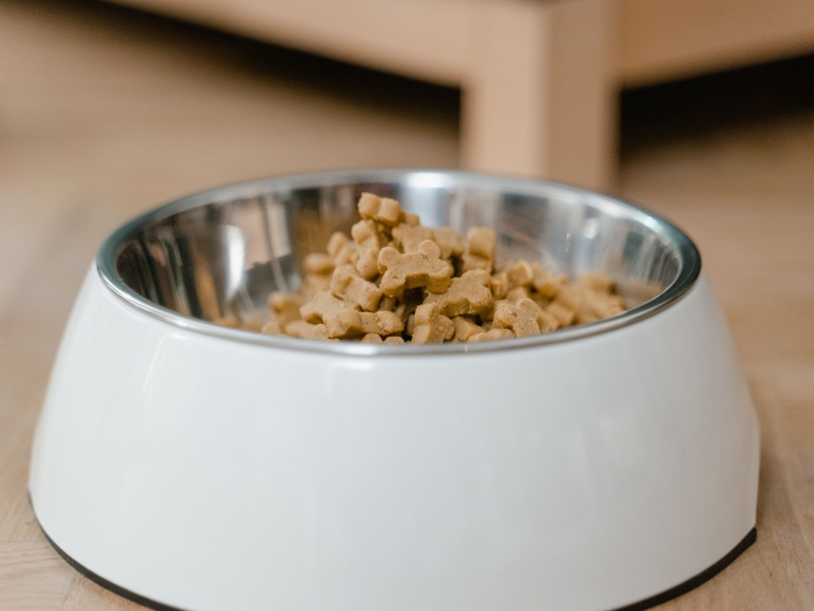
Prevención
Vacunas y farmacia
En la misma clínica.
Servicios publicados en su propia web en 2024; se confirman por teléfono.
«Empatía y mucho amor para tratar a los pacientes».
Una reseña de Google
Perros y gatos
Los que comparten casa
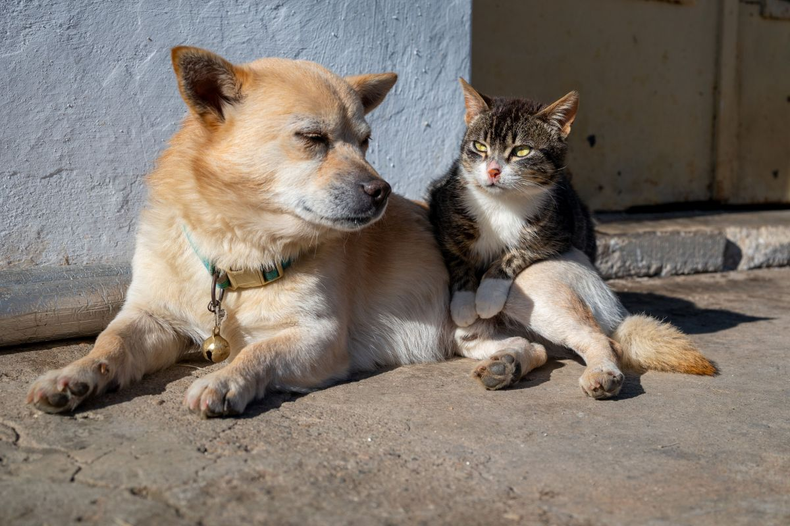
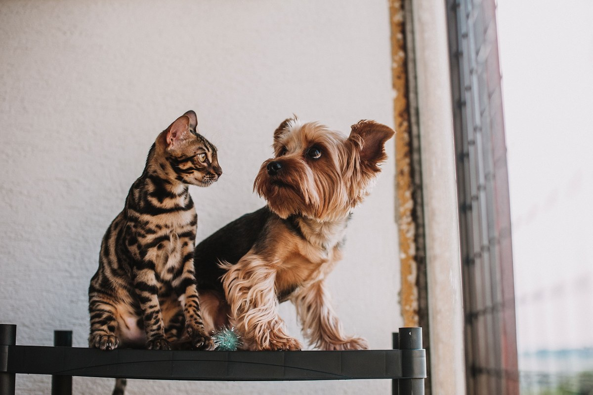
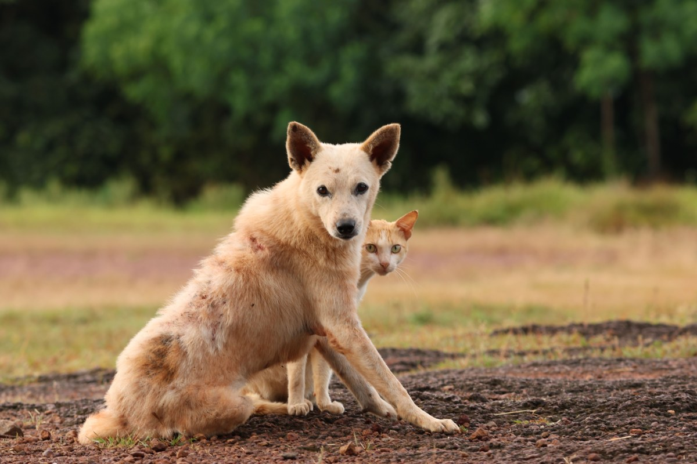
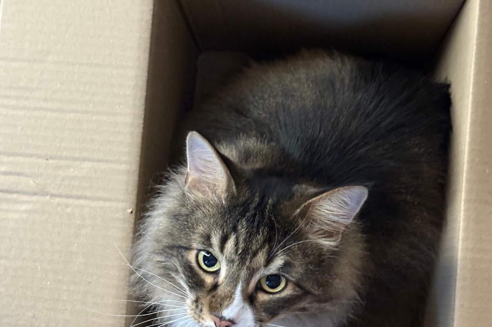
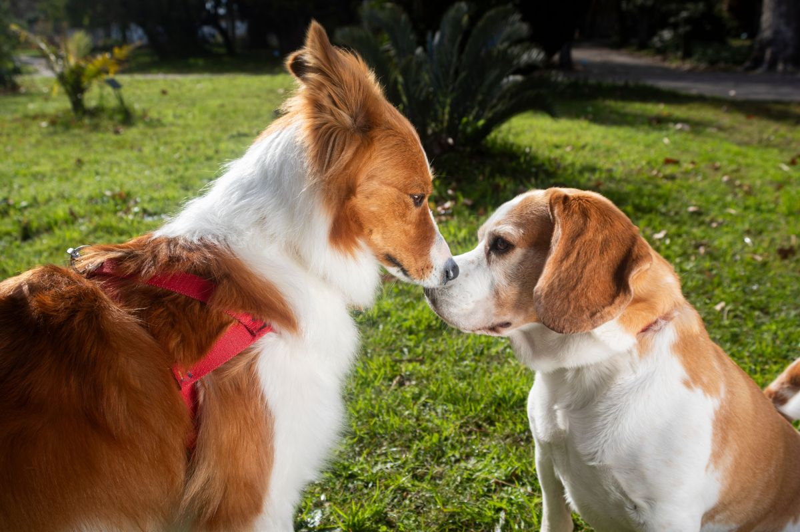
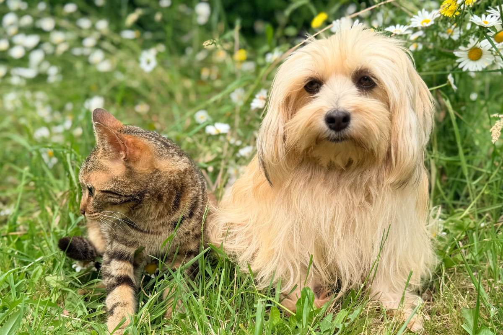
Fotos de referencia: ninguna es de la clínica.
Dónde estamos
Av. Gabriela 1863, Puente Alto
- Teléfono
- (2) 2542 1741
- Lun a sáb
- 9:30–20:00
- Domingo
- 10:30–18:00
Atiende con hora: no es un servicio de urgencia 24 horas.
Av. Gabriela 1863 Abrir en Google Maps
Para la clínica
Qué es real y qué falta
Lo verificado
Dirección, teléfono, horario, reseñas, y los servicios y años de su web de 2024.
Lo de ejemplo
La guía de convivencia, las fotos y los textos de las tarjetas.
Lo urgente
Su ficha de Google enlaza clinicaveterinariavasca.cl, que desde el 31-08-2026 es de otra persona y muestra un casino online.